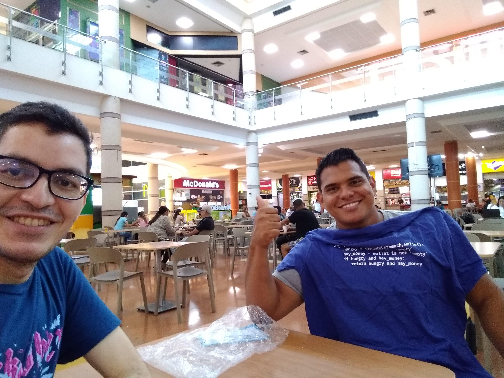
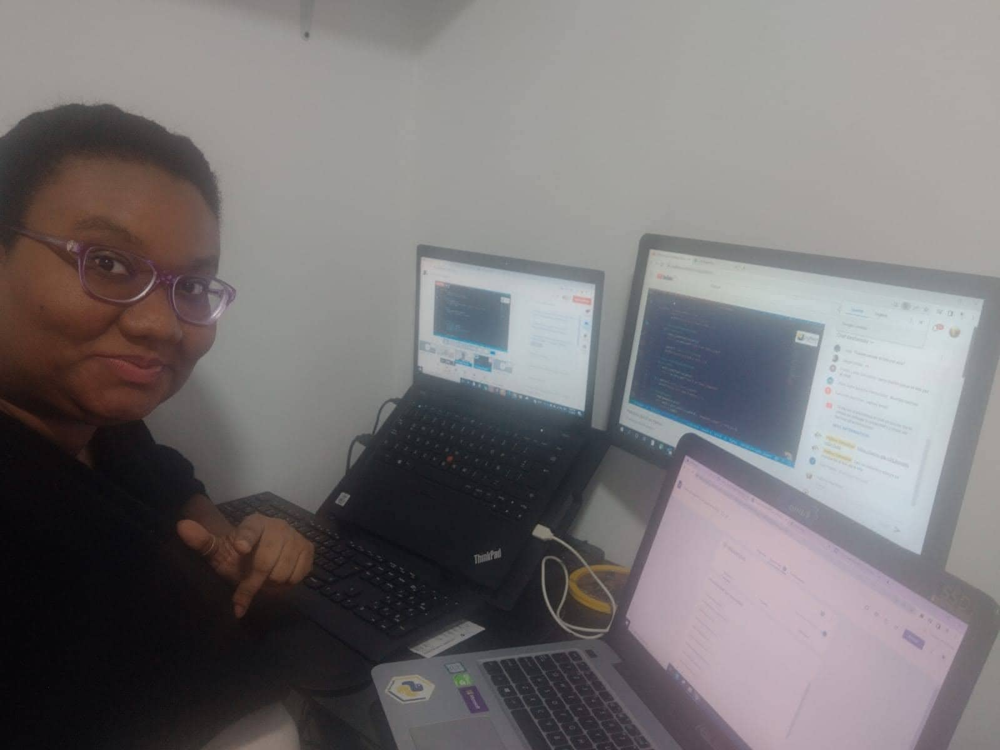
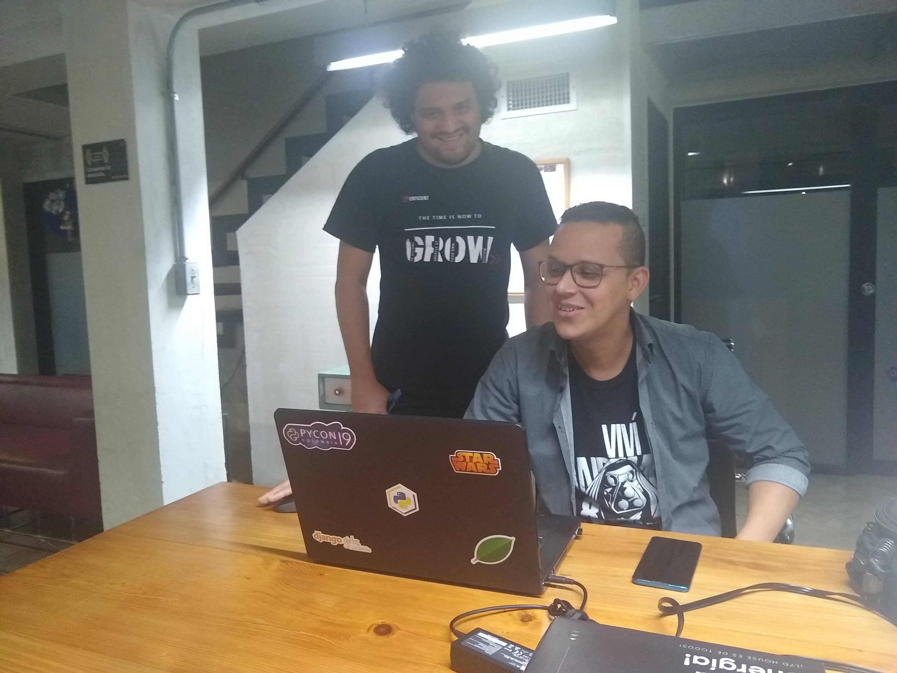

The year 2022 was another particular year for the community, as we returned to having all the virtual meetings. For this year we had already gotten perfectly used to virtuality, so we took the opportunity to invite a couple of international speakers.
You can find the slides of the talks, the links of their videos and the Github repositories or Jupyter notebooks (if applicable) in the evento section.
1. Welcome meeting for 2022 (Virtual)
In January we had our usual welcome-of-the-year meeting where we shared with the community in a more casual setting. The interesting aspect of this month was that one of the participants of the Python League 2021 told us about his desire to join the group of community contributors. We always need help with logistics, so this is great news for us.
Welcome Fernando!

2. Detection of Lung Cancer using Image Processing
We started the first talk of the year on the right foot, as we had Josimar Chiré as a guest from Peru with a very interesting talk on digital image processing. We had already had Josimar as a speaker in person in 2019 with his Artificial Intelligence and Applications talk when he visited Barranquilla for his postgraduate studies. It was very nice to have his proactivity, since he himself contacted us and suggested we give a talk.
You can find the slides from his 2019 talk on our Google Drive.
🔊🔊🔊 You can find his talk at this link https://youtu.be/fAG3_nMPpjU. 📢📢📢
3. Cross Modal: Connecting the world of NLP with that of Computer Vision
For March, we have Wayner, an old acquaintance of the house. He has been accompanying us and sharing his knowledge since 2016. His first talk was on "Feelings Analysis". Here you can find his Jupyter Notebook.
The cross modal talk is focused on a particular niche within the community who are passionate about the topics of artificial intelligence and data science. The talk is worth watching.
🔊🔊🔊 You can find his talk at this link https://youtu.be/hLOxurqMOkQ. 📢📢📢
4. Conversation from junior to senior: Commemorating 7 years of community

In this commemorative event, we brought several pythonists who were accompanying us in the first events of 2015. It was a pleasant talk, full of a lot of nostalgia and experiences in the technology industry.
🔊🔊🔊 You can find the discussion at this link https://youtu.be/M5-witzXkDk. 📢📢📢
By the way, we are celebrating March 31st, so gifts are accepted :P (in the form of talks, sponsorships, donations, cups and whatever comes your way hehe)
Something additional that we did in April was to finally deliver the last t-shirt we had in stock from our exclusive collection "spring-summer 2019 season" 👘😜 (we sold it in 2019 but we hadn't been able to deliver it hahaha)

5. SymPy as a learning tool in mathematics and programming
By May we had no idea who was going to give the talk (as always hahaha), so we asked in the Python Colombia Telegram group and that's how we met Alfonso Jiménez. It seems to me that it was his first talk with the community, so he was very excited (and so were we).
You can find his Google Colab notebook here.
🔊🔊🔊 You can find his talk at this link https://youtu.be/L7PsaOu0bSQ. 📢📢📢
5**. Django Girls Colombia (virtual)

Although it was not an event that we put on our agenda, a couple of people from the PyBAQ team participated as organizers and mentors of the workshop attendees.
It was nice to go back to a Django Girls, even if it was virtually.
6. SOLID principles in Python

Directly from Argentina, we have the participation of Emiliano Martin, technical leader at Mercado Libre. Without a doubt, one of the most viewed talks of the year. Emiliano knew how to transmit theory and practice in a masterful way. It's my #1 recommended talk of 2022.
Among other things, this was the first time that Yuliana was in charge of 100% streaming on YouTube. Everything went smoothly, except at the end when she had trouble ending the transmission. If you look at the end of the video, you'll see that the last 2 minutes look like a live co-working session 🤣🤣.
🔊🔊🔊 You can find his talk at this link https://youtu.be/ZjQyjDWyLCc. 📢📢📢
7. UI Automation in Python applying the Screenplay pattern
By the end of July, Scot, as we affectionately call Sergio Orozco. from the PyBAQ team applied to give a talk in the area with the most experience, Quality Assurance (QA for friends).
Just so you know, when someone from the PyBAQ team gives a talk, there are two possible reasons:
- We didn't find anyone and it was our tribute of the month (LOL).
- I really wanted to share this knowledge with the community.
What do you think were Scot's reasons? Let us know in the comments :P
🔊🔊🔊 You can find his talk at this link https://youtu.be/s_h5uAZB8yU. 📢📢📢
8. Encouraging programming from childhood
This was one of the talks I was most looking forward to hosting. On this occasion we have the participation of two parents: Johann Echavarría, a colleague from the Colombia dev community and Jairo Coronado, the father of a child to whom I give personalized Python classes. By the way, you can find my courses at https://javierdaza.co/cursos/.
Despite participating in the organization, previous preparation meeting, and in the presentation of the live event, I stayed backstage and gave the floor to Fer, who is also a father of a family.
🔊🔊🔊 You can find the discussion at this link https://youtu.be/RIx-Wf1dZ6U. 📢📢📢
9. Landing a job as a programmer at age 45
After the SOLID talk on Python, this is my #2 recommended talk of 2022. Here we dive into the life story of Jorge Rueda and his experience entering the world of technology and programming at an age that many would think it is impossible.
When we had the preparation talk with Jorge and we asked Fernando what his impression was, this is what he answered us:
"I just spoke with Jorge Rueda and I was simply excited. Jorge's talk may be one of the most shocking stories I've heard in years. And we will have the pride and pleasure of sharing it. Wonderful!"
🔊🔊🔊 You can find his talk at this link https://youtu.be/kOSqcrgTlhI. 📢📢📢
10. Introduction to Pentesting

For October, Atx, as we affectionately call Sergio Molinares (yes, another Sergio. Do you see why the nicknames?), is passionate about cybersecurity and hacking (long live the red team!) who has been accompanying us since 2019.
In this, his second talk with the community, he shows us, in addition to his technical knowledge, his soft skills to keep a passionate audience in his talk for more than 1 hour!. If you watch the full video, stay until the end because the questions from the audience are from the best events you will find in this presentation (there is also a question session in the middle)
🔊🔊🔊 You can find his talk at this link https://youtu.be/pDu87a3lr78. 📢📢📢
11. Create your own video calls with Python and WebRTC
In this talk another old acquaintance of the house returns, Darío Guzman, co-organizer of the community in 2018, speaker at PyCon Colombia 2019 and mentor of multiple Django Girls workshops that we did in Barranquilla and its surroundings (we also organized one in Cartagena in 2017).
From this talk you can also find a balance of theory and code that are worth seeing in detail. An unmissable talk of 2022!
🔊🔊🔊 You can find his talk at this link https://youtu.be/XtJncjNegvQ. 📢📢📢
12. From psychologist to programmer, career change or complement?
For December we had the cherry on the pudding, my recommended talk #3 of 2022. Directly from Peru, compatriot Julían Casadiego shares his life experience of how a psychologist learns to program with Python.
His talk is one of those gems that you will rarely find on the internet..
🔊🔊🔊 You can find his talk at this link https://youtu.be/Dzi89oXcRUg. 📢📢📢
12+1. Ups and downs in the team of co-organizers

This 2022 a year of ups and downs within the team. We started the year with joy when we received Fernando as a collaborator, but, on the other hand, we continue to bring a white elephant that we had been carrying since 2021.
In the middle of 2021, Paula and Brayan had asked for a time off as co-organizers to dedicate themselves to personal matters, so, as you can imagine, what happens in every team of volunteers? fewer helping hands translates into more work for those of us left in charge of the community. Luckily we managed to balance loads (that is, stop doing activities / projects and internal meetings hahaha).
For October or November both requested the discharge. Paula left the team and Brayan became a collaborator (a role that demands fewer responsibilities than a co-organizer). As always, seeing someone from the organizing team leave is a bit of a sad moment (despite the fact that we already saw it coming). Paula and Brayan accompanied us I think for 3 years or so in multiple official events of the Python Colombia community both in Barranquilla and Medellín, as well as team meetings and the occasional casual outing. Thank you so much for everything you did ♥️.
Ultimately, what happened organically is that the WA group of co-organizers came together with the speakers from September, October and November, so we asked them if they wanted to help us and they said yes! We'll see how things go with this new team.
In December we had a brief meeting to align expectations and see how each of us can collaborate. We'll continue to look for more helping hands at upcoming events, so if you're one of those people who like to help, raise your hand!
14. Lack of greater female representation
This year the female quota in the community was conspicuous by its absence. I am not saying this because of the participants (I thought I saw several girls in the Youtube chats) nor because of Yuli from the PyBAQ team (let's go!), but I am referring to the number of speakers and collaborators/co-organizers.
Until 2021, the PyBAQ team had 50% female participation, but by the end of 2022 we were unbalanced by having a clearly male majority within the team.
On the other hand, the last time we had girls as speakers was in the semifinals of group 2 of La Liga Python 2021, where Tatiana Davila and Vanessa Rodriguez participated.
In my opinion, the lack of doing Django Girls workshops in the city for the last 2 years directly affected the diversity of the community. Of these events, not many girls join us, but the ones that do, create a great impact in the community (for example: Paula, Sara, Yuliana, Kathy and Judy came to the community through these workshops). .
On behalf of the "PyBAQ team" we are very grateful to the speakers we had this year 2022, to our sponsors and/or allies for supporting this great community effort, and to all the people who actively participate and listen to us.
I hope I've made a good summary of 2022 for the community Is there anything else I needed to add? Please let us know in the comments.
See you in 2023 with more events, learning and programming.
PyRegards